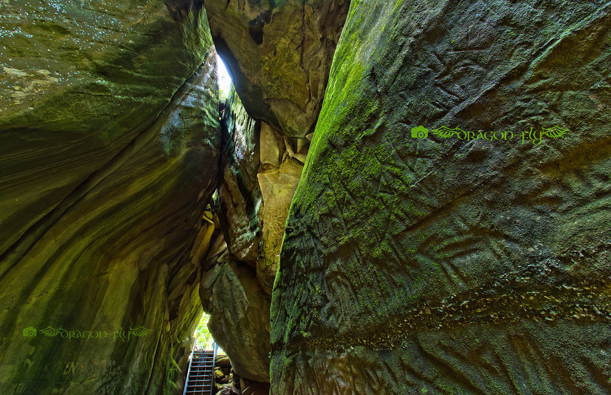

Wayanad announces itself before you see it. Coming up from Kozhikode on the National Highway, the road begins its climb through the Lakkidi Ghat — eighteen hairpin bends ascending nearly a thousand metres in under twenty kilometres — and somewhere around the seventh bend, the air changes. It cools and thickens and acquires a green density that feels almost audible, as though the forest is producing a frequency just below human hearing but entirely within human feeling. By the time the plateau opens and Wayanad spreads across your windscreen in forty shades of forest, the plains feel like something that happened to someone else.
This is Kerala's northernmost hill district, bounded by Karnataka and Tamil Nadu, occupying the upper Deccan plateau of the Western Ghats at elevations between 700 and 2,100 metres. It is one of the most biodiverse places on the Indian subcontinent — a UNESCO World Heritage site as part of the Western Ghats cluster, home to the largest Adivasi population in Kerala, and containing within its borders a density of forest, wildlife, waterfall, and living culture that most destinations spend decades trying to manufacture. Wayanad simply is. The difficulty is not finding things here. The difficulty is choosing which of them to attend to.
The Adivasi Voices That Predate the Forest Road
Wayanad's eighteen Adivasi tribes — among them the Paniya, the Kurichya, the Kattunayaka, the Oorali, and the Mullukuruma — have lived in these forests for thousands of years. Their relationship with this landscape is not the relationship of inhabitants to a place but of authors to a text: they shaped it, named it, understood its seasonal rhythms, its medicinal logic, its spiritual geography, long before the rest of the world knew this plateau existed. To visit Wayanad without some engagement with that living culture is to visit the surface of something much deeper.
My first full day was spent at the Uravu Bamboo Village near Thrikkaipetta, a social enterprise run by Adivasi artisans that produces bamboo products ranging from fine basketry to structural furniture. The workshop floor — open-sided, roofed with bamboo thatch, smelling of fresh-split cane — was occupied by a dozen craftspeople working in companionable silence, their hands moving with the particular surety of people who learned a technique before they learned to explain it. I sat with a young Paniya woman named Meena who was weaving a traditional rice-winnowing basket, and she showed me, patiently and without expectation that I would succeed, how to split a cane section with two thumbs. I did not succeed. The basket she was making was extraordinary.
On Engaging with Adivasi Communities
Responsible tourism in Wayanad means community-led experiences over voyeuristic village tours. Seek out enterprises like Uravu, the Wayanad Social Service Society, and government-accredited tribal tourism cooperatives that direct revenue to communities directly. Photograph only with explicit, informed consent.
Edakkal: Where History Is Carved Into Stone
The most startling thing about the Edakkal Caves is not the petroglyphs themselves — extraordinary as they are — but the location. These are not caves in the usual sense: they are a fissure in a single enormous boulder on the summit of Ambukuthi Mala, created when a section of rock split along a fault line, leaving a long narrow chamber open to light from above. The climb to reach them is forty-five minutes on a well-maintained trail through forest that grows thicker and stranger as you ascend, the trees draped in lichen, the path edged with giant cardamom that grows here without cultivation.
The petroglyphs inside — geometric symbols, human figures, animal outlines, a wheeled vehicle that has been dated to the Neolithic period and reads as startlingly modern — cover the walls in three distinct layers of carving spanning roughly eight thousand years. The oldest are thought to date to around 6,000 BCE. Standing in that narrow stone corridor, reading figures scratched into rock by hands that predate every civilisation I know anything about, is an experience that is difficult to absorb in a single visit. I went twice, once in morning and once in late afternoon when the light through the fissure is oblique and the carvings cast their own shadows, becoming briefly three-dimensional and alive.

Chembra Peak: The Heart-Shaped Lake Above the World
At 2,100 metres, Chembra Peak is the highest point in Wayanad and the second highest in the Nilgiris after Doddabetta. The trek from Meppadi takes four to five hours return, rising through grassland and shola forest on a trail that is well-marked in its lower sections and requires some route-finding above the treeline. The permit system — trekkers register at the forest department checkpoint and are assigned a guide — means the mountain is never crowded, and the early morning slots are frequently near-empty.
The famous feature of the Chembra ascent is a heart-shaped lake at 1,800 metres — a natural formation that maintains its shape year-round, fed by springs rather than rainfall, fringed with the short alpine grass that characterises the upper plateau. I reached it at eight-thirty on a Wednesday with a guide named Suresh who carried nothing but a small bag and moved through the grassland with the unhurried efficiency of someone for whom this is a commute rather than an adventure. The lake was perfectly still and perfectly heart-shaped and reflected, in its middle section, a column of cloud so precisely vertical it looked architectural. I sat beside it for thirty minutes before continuing to the summit, and felt, in the specific way high places produce, very small and very calm simultaneously.
High places produce a particular kind of calm — not the absence of thought but the gentle irrelevance of the thoughts you normally carry. Chembra gave me two hours of that. It is not a small gift.
Muthanga: Dawn in the Elephant Corridor
The Muthanga Wildlife Sanctuary occupies the eastern edge of Wayanad, sharing a porous border with Karnataka's Nagarhole National Park and Tamil Nadu's Mudumalai. Together, these three reserves form one of the largest contiguous wildlife corridors in South Asia — roughly 5,500 square kilometres of protected forest through which elephants, tigers, leopards, sloth bears, and wild dogs move according to their own unmapped geography, indifferent to administrative boundaries. Muthanga itself covers 345 square kilometres and is perhaps best known as elephant country: the herds here are large, well-studied, and — if you encounter them from a sanctioned jeep at a respectful distance — among the most moving wildlife encounters available in South India.
I joined the dawn safari, which departs at six and covers a designated forest circuit over two hours. Our jeep — a battered open-topped vehicle driven by a man named Thomas who had been leading these safaris for fourteen years and possessed the particular gift of knowing when to stop and say nothing — found a herd of eleven Asian elephants in the teak forest thirty minutes in. A young bull was separating himself from the group, his ears fanning slowly in the cool morning air. We stayed for twenty minutes. No one spoke. The forest around the herd had that charged, held-breath quality that large wild animals produce in their proximity — the sense that you are permitted here, that the permission is conditional, and that the conditions are theirs to set.
Kalpetta, the Spice Markets, and Tea at Altitude
Wayanad's district capital Kalpetta is a functional market town rather than a scenic destination, and is better for it. Its morning spice market — operating daily from five until nine — is among the most aromatic spaces I have visited anywhere: stalls selling fresh cardamom (Wayanad grows roughly thirty percent of India's total cardamom production), black pepper still on the vine, dried ginger, nutmeg, vanilla pods, and the small, intensely flavoured Wayanad coffee beans that are gaining a serious following among specialty roasters. I bought more than I could realistically carry. The market vendors were accustomed to this outcome and provided string bags without being asked.
The district's tea estates are quieter than those of Munnar but comparable in quality, particularly those at higher elevations around Lakkidi where the altitude and the specific mineral composition of the soil produce a light, floral orthodox tea with a brightness that announces itself even before you add anything. I visited the Wayanad Heritage Tea Factory near Vythiri, where the withering lofts and rolling machines date to the 1930s and are still operational, and drank a first-flush in the tasting room with a view down into a valley so green it seemed to be producing its own light.
The Kabani River at Evening
The Kabani River — which rises in the Brahmagiri range, flows through Wayanad's eastern forests, and eventually joins the Kaveri in Karnataka — is Wayanad at its least complicated. In the evenings, particularly at the shallow crossing near Thirunelli, the river runs clear over flat granite and the light comes through the trees at an angle that turns everything the colour of old honey. I sat on a rock in the middle of the river for an hour on my penultimate evening, shoes in my hand, watching a pair of kingfishers work the upstream shallows with the focused intensity of professionals. The water was cold and the granite was warm and the forest on both banks was very close and very quiet and very alive.
Nearby, the Thirunelli Temple — an ancient Vishnu shrine built in the Kerala nagara style, positioned at the confluence of eighteen streams at the foot of the Brahmagiri hills — provides a different kind of stillness. The temple's origins are unclear, its consecration possibly predating the Common Era, and the forest around it is protected as temple land, meaning the trees here are old in a way that most Wayanad forest no longer is: gnarled, enormous, their root systems building the hillside they inhabit. I arrived as the evening lamp-lighting ceremony was beginning and stayed through it in the outer courtyard, listening to the bells carry across the river.
On Leaving: What the Forest Keeps
My last morning in Wayanad was spent doing almost nothing. I sat on the veranda of my guesthouse — a converted planter's bungalow above Ambalavayal, its garden backing onto a section of forest reserve — and watched the mist resolve itself. It does this slowly here, in layers: first the treeline becomes visible, then the middle canopy, then the lower forest, then the agricultural land between the forest and the road, and finally the road itself, which in Wayanad is always narrower than you remembered it and always more beautiful for the thing growing on either side.
Wayanad does not release you easily. It is a place that inserts itself into the ongoing conversation you have with yourself about how you want to live — and it takes a position in that conversation that is difficult to argue with.
The drive out through Lakkidi Ghat is the drive in reversed, the temperature rising with each hairpin, the forest thinning, the plateau retreating in the rearview mirror. By the time the Kozhikode plain opens below, Wayanad is already becoming a kind of dream — too green, too cool, too rich in living things to be entirely real from this altitude and this heat. But it is real. The cardamom in my bag smells real. The elephant in the dawn forest was real. The eight-thousand-year-old hand that pressed a figure into a rock wall was real, and the hand that traced it on a cave wall, and the river that ran cold over granite while kingfishers worked the shallows. All of it real, and all of it, now, held.